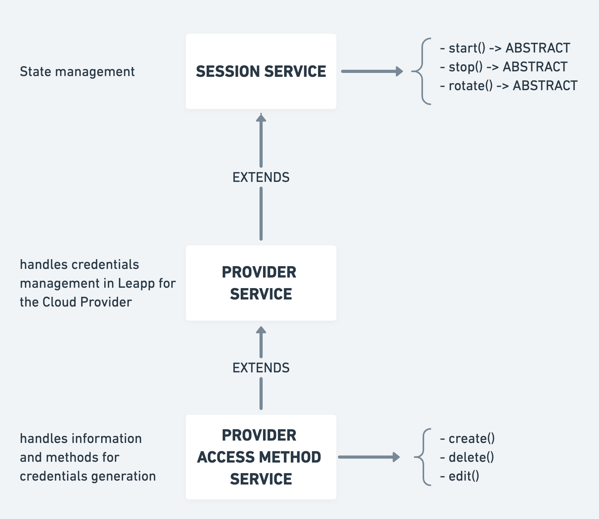

Overview
To allow what is proposed in the Specs, Leapp's project is built on a set of services that realize the basic functionalities.
The actual project's structure is structured to allow developers to contribute to source code in the most easier and atomic way possible.
In particular, we want to focus the attention on the development of Session Service patterns:
Session Service Pattern
A specific service manages the way each type of Session will handle the process of credentials generation.

There is a three-level abstraction implementation for this kind of service:
- A general Session Service is the top level of abstraction of a Session, it implements the state management of any Session in the app and has three abstract methods for Start, Stop, and Rotate.
- A Provider Session Service (i.e., AWSSessionService) extends the general session service and handles credentials for a specific Cloud Provider to Start, Stop, and Rotate each Session of this type. This level of abstraction unifies all the common actions for all the Access Methods within a Cloud Provider.
- A Provider Access Method Service (i.e., AWSIAMUserService) is the concrete implementation of all the information needed to generate the credentials for a specific Access Method. It implements both CRUD methods and the specific steps to generate credentials for a given Access Method.
AWS example
Leapp manages on behalf of a user the ~./aws/credentials file.
It leverages Start, Stop, and Rotate methods from basic Session Service to add, remove, or renew temporary credentials in the file.
Based on the Session Service Pattern, we created the Aws Session Service to extend basic Session Service for AWS.
AwsSessionService (Provider Service)
AwsSessionService was created because all the Access Methods for AWS implemented in Leapp shares a common code structure for Start, Stop, and Rotate.
AwsSessionService defines three abstract methods, that must be implemented by every Access Methods of AWS. They are:
- generateCredentials
- applyCredentials
- deApplyCredentials
async generateCredentials(sessionId: string): Promise<CredentialsInfo> {}
async applyCredentials(sessionId: string, credentialsInfo: CredentialsInfo): Promise<void> {}
async deApplyCredentials(sessionId: string): Promise<void> {}
Let's check Start, Stop, and Rotate in detail.
Start()
The start method is called when a user clicks on an AWS session in the Session List in the Client UI, and it marks the activation of a session thus generating and applying new temporary credentials.
async start(sessionId: string): Promise<void> {
try {
this.stopAllWithSameNameProfile(sessionId);
this.sessionLoading(sessionId);
**const credentialsInfo = await this.generateCredentials(sessionId);**
**await this.applyCredentials(sessionId, credentialsInfo);**
this.sessionActivate(sessionId);
} catch (error) {
this.sessionError(sessionId, error);
}
}
Start method accept a sessionId parameter to retrieve the session to activate. Above is how the Start method is coded in AWS Session Service by means of a template.
Using a template ensures that every Access Method for AWS, will need to implement only some specific parts of the code, without compromising the general logic.
The steps included are:
- Stop all sessions with the same name profile - only one session can be activated with a specific profile name at a time.
- Put Session state to loading.
- Generate a set of new temporary credentials for the given session - this is overridden by the specific Access Method.
- Once obtained the new temporary credentials apply them - this step is also overridden by Access Methods.
- Finally set Session state to active using sessionActivate() method. This method will also set the startDateTime to the current Date and Time.
In case of an error we call the generic method sessionError which will send relevant error information both to the UI and the log file.
Rotate()
async rotate(sessionId: string): Promise<void> {
try {
this.sessionLoading(sessionId);
**const credentialsInfo = await this.generateCredentials(sessionId);
await this.applyCredentials(sessionId, credentialsInfo);**
this.sessionRotated(sessionId);
} catch (error) {
this.sessionError(sessionId, error);
}
}
A similar approach to Start is used with Rotate. Rotate() is called by the Client every time a session is expired (temporary credentials are no longer valid). Calling Rotate will generate a new set of temporary credentials, replacing the old ones.
The steps included are:
- Put Session state to loading.
- Generate a set of new temporary credentials for the given session - this is overridden by the specific Access Method.
- Once obtained the new temporary credentials apply them - this step is also overridden by Access Methods.
- Finally set Session state to active by calling the sessionRotated() method. This method will also set the startDateTime to the current Date and Time.
In case of an error we call the generic method sessionError which will send relevant error information both to the UI and the log file.
Stop()
async stop(sessionId: string): Promise<void> {
try {
**await this.deApplyCredentials(sessionId);**
this.sessionDeactivated(sessionId);
} catch (error) {
this.sessionError(sessionId, error);
}
}
The Stop method happens when an error occurs during a call or when the user clicks on an active session. In this case, we de-apply temporary credentials, which in the case of AWS, means removing them from the credential file.
Steps here are:
- De-apply credentials - this method is overridden by specific implementations of Access Methods, usually involving operations other than removing credentials from credentials file, like removing sensible information from your Secret Vault because they are no longer used.
- Deactivate the session - which involves putting the Session' state to inactive. The Session will be moved from active session list to general session list in the UI.
As always in case of error, we send general error information to the UI and to the log file via sessionError.
To conclude, each Access Method has a specific service that extends AwsSessionService implementing these 3 common methods (generate, apply, and de-apply).
Access Method Session Service
An Access Method generates credentials for the User access to a Cloud Provider, for example, in AWS we have different access methods:
- AWS IAM Users
- AWS IAM Roles Federated
- AWS IAM Role Chained
- AWS SSO Role.
Each access method service implements actions to Create, Delete, and Edit this specific Session Type.
As the first thing we need to create an interface of all the required information to a specific Access Method:
export interface AwsPlainSessionRequest {
accountName: string;
accessKey: string;
secretKey: string;
region: string;
mfaDevice?: string;
}
To set up a specific session from an Access Method we have to create it with a Create method, which uses the interface previously defined:
create(accountRequest: AwsPlainSessionRequest, profileId: string): void {
const session = new AwsPlainSession(accountRequest.accountName, accountRequest.region, profileId, accountRequest.mfaDevice);
this.keychainService.saveSecret(environment.appName, `${session.sessionId}-plain-aws-session-access-key-id`, accountRequest.accessKey);
this.keychainService.saveSecret(environment.appName, `${session.sessionId}-plain-aws-session-secret-access-key`, accountRequest.secretKey);
this.workspaceService.addSession(session);
}
At the moment edit and delete are defined generally in SessionService, so no need to implement them in an Access Method.
To allow using other services to construct our logic we define them in the constructor of the service class.
constructor(
protected workspaceService: WorkspaceService,
private keychainService: KeychainService,
private appService: AppService,
private fileService: FileService) {
super(workspaceService);
}
We also need to define a super(workspaceService) as we are extending AwsSessionService, and thus its constructor.
To fulfill its tasks an Access Method must extend AwsSessionService; doing so, will require to implement these three methods:
async generateCredentials(sessionId: string): Promise<CredentialsInfo> {}
async applyCredentials(sessionId: string, credentialsInfo: CredentialsInfo): Promise<void> {}
async deApplyCredentials(sessionId: string): Promise<void> {}
They are mandatory, but besides them, a Developer can add to the service class every private or static method he/she would like to organize the code.
We present AWS IAM Users Access Method implementation as an example.
AWS IAM Users Access Method
Below we present all the methods implemented in the AWS IAM User Access Method; its purpose is to build temporary IAM STS credentials starting from a standard IAM User credential set.
The Set is stored securely upon session creation in the OS Vault and is used at runtime, and only here to generate valid IAM STS temporary credentials.
Let's start with two helper methods:
static isTokenExpired(tokenExpiration: string): boolean {
const now = Date.now();
return now > new Date(tokenExpiration).getTime();
}
With isTokenExpired we check the SessionToken expiration given with the temporary credentials to see if they are still valid or not (thus the method returning a boolean).
static sessionTokenFromGetSessionTokenResponse(getSessionTokenResponse: GetSessionTokenResponse): { sessionToken: any } {
return {
sessionToken: {
// eslint-disable-next-line @typescript-eslint/naming-convention
aws_access_key_id: getSessionTokenResponse.Credentials.AccessKeyId.trim(),
// eslint-disable-next-line @typescript-eslint/naming-convention
aws_secret_access_key: getSessionTokenResponse.Credentials.SecretAccessKey.trim(),
// eslint-disable-next-line @typescript-eslint/naming-convention
aws_session_token: getSessionTokenResponse.Credentials.SessionToken.trim(),
}
};
}
The second helper method constructs a CredentialInfo object to return to the AWSSessionService template for Start() and Rotate(). It is called at the end of the generateCredentials() *method*.
It has the SessionTokenResponse from the STS client as the input parameter. It maps all the relevant attributes to the returned object.
create(accountRequest: AwsIamUserSessionRequest, profileId: string): void {
const session = new AwsIamUserSession(accountRequest.accountName, accountRequest.region, profileId, accountRequest.mfaDevice);
this.keychainService.saveSecret(environment.appName, `${session.sessionId}-iam-user-aws-session-access-key-id`, accountRequest.accessKey);
this.keychainService.saveSecret(environment.appName, `${session.sessionId}-iam-user-aws-session-secret-access-key`, accountRequest.secretKey);
this.workspaceService.addSession(session);
}
Create() is used to construct a new Session as explained before. It calls for a new AwsIamUserSession, passing the properties retrieved from the UI form.
A Developer will define a new Model for a Session and that new model will be used here, in case he/she wants to create a new Access Method.
In this particular case we also save the static credentials in the OS Vault using the KeyChain service, which makes saving and retrieving secrets from the vault transparent to the developer.
Finally, we add the session to the workspace (our configuration object).
async generateCredentials(sessionId: string): Promise<CredentialsInfo> {
// Get the session in question
const session = this.get(sessionId);
// Retrieve session token expiration
const tokenExpiration = (session as AwsIamUserSession).sessionTokenExpiration;
// Check if token is expired
if (!tokenExpiration || AwsIamUserService.isTokenExpired(tokenExpiration)) {
// Token is Expired!
// Retrieve access keys from keychain
const accessKeyId = await this.getAccessKeyFromKeychain(sessionId);
const secretAccessKey = await this.getSecretKeyFromKeychain(sessionId);
// Get session token
// https://docs.aws.amazon.com/STS/latest/APIReference/API_GetSessionToken.html
AWS.config.update({ accessKeyId, secretAccessKey });
// Configure sts client options
const sts = new AWS.STS(this.appService.stsOptions(session));
// Configure sts get-session-token api call params
// eslint-disable-next-line @typescript-eslint/naming-convention
const params = { DurationSeconds: environment.sessionTokenDuration };
// Check if MFA is needed or not
if ((session as AwsIamUserSession).mfaDevice) {
// Return session token after calling MFA modal
return this.generateSessionTokenCallingMfaModal(session, sts, params);
} else {
// Return session token in the form of CredentialsInfo
return this.generateSessionToken(session, sts, params);
}
} else {
// Session Token is NOT expired
try {
// Retrieve session token from keychain
return JSON.parse(await this.keychainService.getSecret(environment.appName, `${session.sessionId}-iam-user-aws-session-token`));
} catch (err) {
throw new LeappParseError(this, err.message);
}
}
}
The first of the abstract methods we need to implement in the Access Method Service. We use this to generate credentials and return them in the form of a Javascript Promise - because the procedure is potentially not immediate and asynchronous.
We retrieve the session previously created using the sessionId, which is passed as a parameter; from there we check its token expiration to see if we need to generate new credentials or reuse the one previously created.
If we already have a valid session token, we retrieve it from the OS vault, parse the JSON string to construct a valid object to return for further processing. Note that when the return type is a Promise, any normal object will be directly cast to Promise
If we don't have any token expiration property (first generation) or the token is expired, we retrieve static credentials from the OS vault and use them in combination with the IAM STS client to generate a new Session Token with temporary credentials using
this.generateSessionToken(session, sts, params);
In case we have configured Multi-Factor Authentication, we call for a helper method to show a modal window, retrieve the MFA code, add it to the STS parameters and then obtain the session token.
private generateSessionTokenCallingMfaModal( session: Session, sts: AWS.STS, params: { DurationSeconds: number }): Promise<CredentialsInfo> {
return new Promise((resolve, reject) => {
this.appService.inputDialog('MFA Code insert', 'Insert MFA Code', 'please insert MFA code from your app or device', (value) => {
if (value !== Constants.confirmClosed) {
params['SerialNumber'] = (session as AwsIamUserSession).mfaDevice;
params['TokenCode'] = value;
// Return session token in the form of CredentialsInfo
resolve(this.generateSessionToken(session, sts, params));
} else {
reject(new LeappMissingMfaTokenError(this, 'Missing Multi Factor Authentication code'));
}
});
});
}
We can see that we return a promise to adhere to the generateCredentials signature.
async applyCredentials(sessionId: string, credentialsInfo: CredentialsInfo): Promise<void> {
const session = this.get(sessionId);
const profileName = this.workspaceService.getProfileName((session as AwsIamUserSession).profileId);
const credentialObject = {};
credentialObject[profileName] = {
// eslint-disable-next-line @typescript-eslint/naming-convention
aws_access_key_id: credentialsInfo.sessionToken.aws_access_key_id,
// eslint-disable-next-line @typescript-eslint/naming-convention
aws_secret_access_key: credentialsInfo.sessionToken.aws_secret_access_key,
// eslint-disable-next-line @typescript-eslint/naming-convention
aws_session_token: credentialsInfo.sessionToken.aws_session_token,
region: session.region
};
return await this.fileService.iniWriteSync(this.appService.awsCredentialPath(), credentialObject);
}
Applying credentials is just a matter of getting the current profile name for the session, construct a suitable credential object using the profile name and the CredentialInfo object from generateCredentials and write it in the AWS credential file.
async deApplyCredentials(sessionId: string): Promise<void> {
const session = this.get(sessionId);
const profileName = this.workspaceService.getProfileName((session as AwsIamUserSession).profileId);
const credentialsFile = await this.fileService.iniParseSync(this.appService.awsCredentialPath());
delete credentialsFile[profileName];
return await this.fileService.replaceWriteSync(this.appService.awsCredentialPath(), credentialsFile);
}
To de-apply a credential we retrieve its profile name and use it to find and remove the credential set from the credential file.
private async getAccessKeyFromKeychain(sessionId: string): Promise<string> {
return await this.keychainService.getSecret(environment.appName, `${sessionId}-iam-user-aws-session-access-key-id`);
}
private async getSecretKeyFromKeychain(sessionId: string): Promise<string> {
return await this.keychainService.getSecret(environment.appName, `${sessionId}-iam-user-aws-session-secret-access-key`);
}
private async generateSessionToken(session: Session, sts: AWS.STS, params: any): Promise<CredentialsInfo> {
try {
// Invoke sts get-session-token api
const getSessionTokenResponse: GetSessionTokenResponse = await sts.getSessionToken(params).promise();
// Save session token expiration
this.saveSessionTokenResponseInTheSession(session, getSessionTokenResponse);
// Generate correct object from session token response
const sessionToken = AwsIamUserService.sessionTokenFromGetSessionTokenResponse(getSessionTokenResponse);
// Save in keychain the session token
await this.keychainService.saveSecret(environment.appName, `${session.sessionId}-iam-user-aws-session-token`, JSON.stringify(sessionToken));
// Return Session Token
return sessionToken;
} catch (err) {
throw new LeappAwsStsError(this, err.message);
}
}
The first two methods are used to simplify getting secrets in the OS vault.
generateSessionToken() is used to call STS for generating a new session, save the expiration time from token in the session, save the session token in the OS vault and finally return the session token for further processing.
private saveSessionTokenResponseInTheSession(session: Session, getSessionTokenResponse: AWS.STS.GetSessionTokenResponse): void {
const index = this.workspaceService.sessions.indexOf(session);
const currentSession: Session = this.workspaceService.sessions[index];
(currentSession as AwsIamUserSession).sessionTokenExpiration = getSessionTokenResponse.Credentials.Expiration.toISOString();
this.workspaceService.sessions[index] = currentSession;
this.workspaceService.sessions = [...this.workspaceService.sessions];
}
This helper method is used to extract the session token expiration and save it as a property of the session object to later use it in case of a further generation of credentials, both during a rotation event or a manual re-apply.